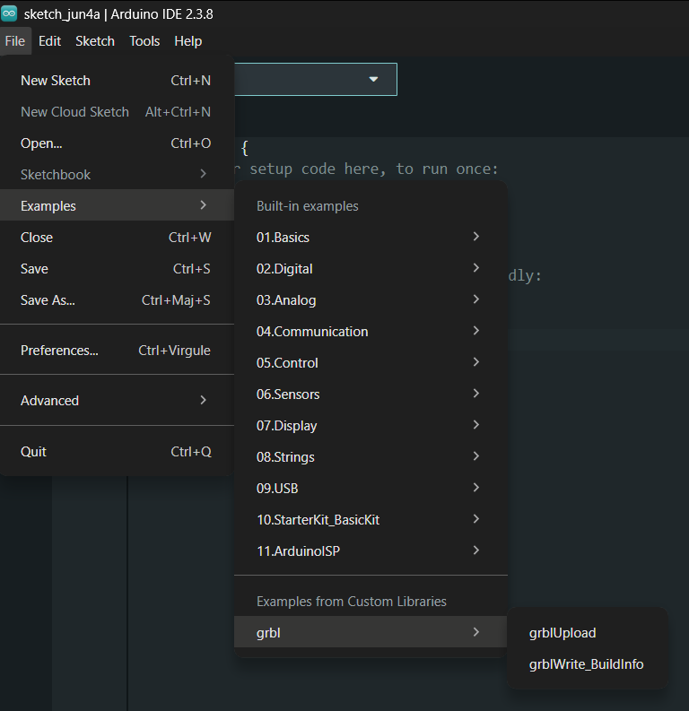
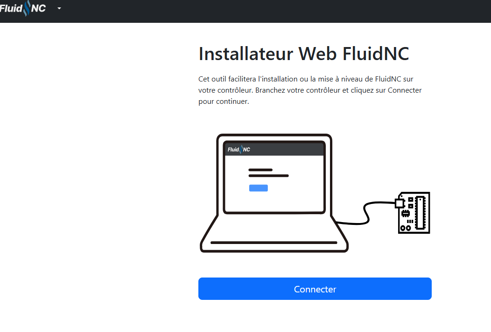
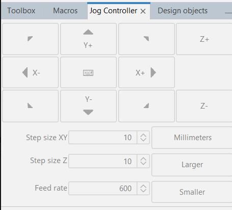
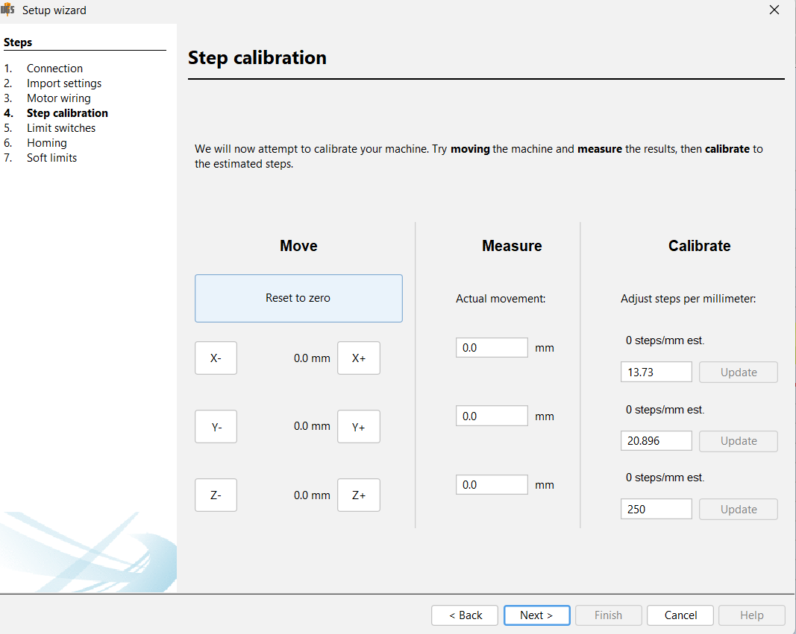
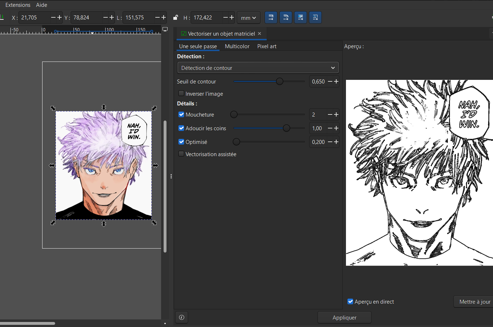
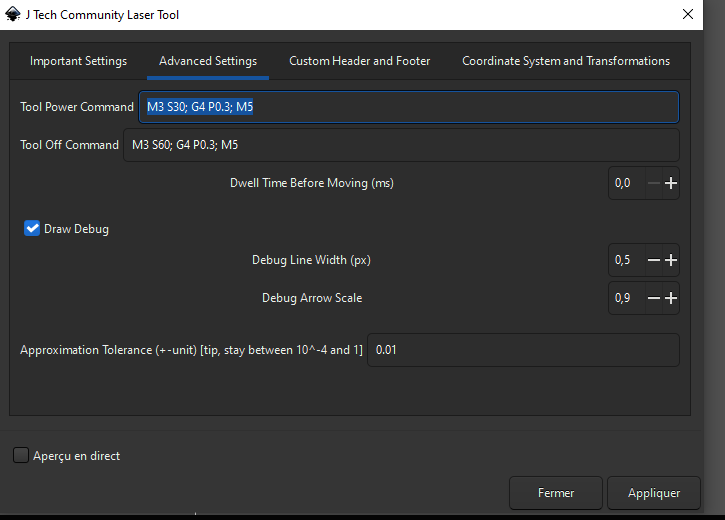
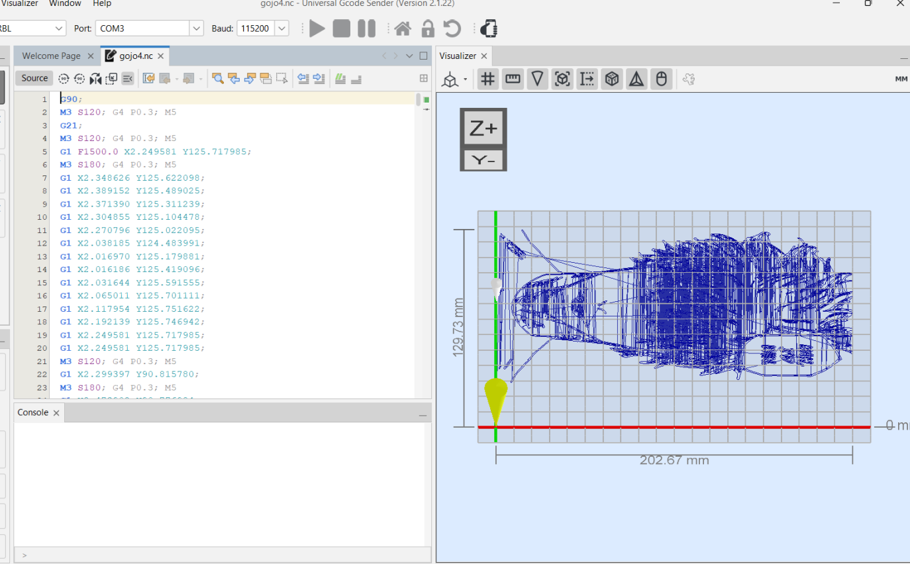

Pour la partie développement de la machine, il ya 3 étapes. Dans un premier temps, il nous faut un logiciel qui va s'installer directement sur notre carte électronique : c'est lui qui va servir de cerveau pour piloter la machine et faire tourner les moteurs. Ensuite, il nous faut un autre logiciel, cette fois-ci sur l'ordinateur, qui va nous permettre de contrôler la machine manuellement et de lui envoyer notre dessin à réaliser. Enfin, pour que la machine sache exactement quoi tracer, il nous faut un outil capable de transformer une image classique en un fichier de commandes physiques que la carte peut comprendre : c'est ce qu'on appelle la génération du fichier G-code. Voici comment nous avons mis tout cela en place.
Au cours de ce projet, nous avons travaillé avec deux configurations matérielles différentes, nécessitant l'utilisation de deux firmwares distincts : la carte CNC Shield, basée sur Arduino, et la carte sur mesure ESP32-S3 Uno.

Pour la CNC Shield, nous avons utilisé GRBL, un firmware open source de référence et extrêmement performant pour le contrôle de mouvement via des microcontrôleurs comme l'Arduino Uno. Son installation s'effectue via l'environnement de développement Arduino IDE, qui permet d'écrire et de téléverser du code C/C++ sur des cartes électroniques.
Dans un premier temps, il faut télécharger le code source au format ZIP depuis la page GitHub officielle du projet. Ce dossier est ensuite importé manuellement dans le logiciel Arduino. Une fois la bibliothèque intégrée, il suffit de naviguer dans les exemples fournis pour ouvrir le fichier nommé "grblUpload.ino". Ce fichier contient le logiciel principal prêt à être compilé et téléversé sur la carte Arduino. À l'issue de cette opération, la carte devient capable d'interpréter nativement les instructions de déplacement.

En ce qui concerne notre carte électronique sur mesure basée sur un ESP32-S3, nous avons opté pour FluidNC. Il s'agit de l'évolution moderne de GRBL, spécialement optimisée pour les processeurs ESP32 et se distinguant par sa connectivité sans fil.
L'installation se fait en téléchargeant le firmware depuis le site web officiel de FluidNC, puis en le flashant directement sur la carte. Une fois installé, l'ESP32 génère son propre réseau Wi-Fi. En s'y connectant, on accède à une interface web intégrée qui permet de configurer les broches et les différents paramètres de la machine, comme la calibration, le tout sans avoir besoin de recompiler le code source.
Une fois la carte programmée, il est nécessaire d'utiliser un logiciel sur l'ordinateur pour piloter la machine en temps réel et exécuter les fichiers de dessin. Nous avons choisi Universal Gcode Sender (UGS), un logiciel open source qui sert d'interface homme-machine.

Ce logiciel intègre notamment un contrôleur manuel appelé "Jog Controller". Celui-ci permet de tester et de vérifier les mouvements des axes X et Y à l'aide des moteurs pas à pas, s'assurant ainsi que la mécanique répond correctement. De plus, UGS permet le contrôle du servomoteur gérant l'axe Z, c'est-à-dire le mécanisme pour lever et baisser le crayon. Dans l'onglet de commande du logiciel, nous pouvons modifier l'angle du bras du servomoteur en envoyant des instructions spécifiques. Par exemple, la commande "M3" suivie de la valeur de l'angle permet de baisser le crayon, tandis que d'autres commandes permettent de le relever.

UGS gère également l'étape critique de la calibration de la machine, indispensable pour s'assurer qu'un centimètre demandé dans le logiciel corresponde exactement à un déplacement physique d'un centimètre en pratique. Dans l'onglet dédié à la calibration de l'assistant de configuration, le logiciel permet de comparer les déplacements demandés avec les mesures réelles. En entrant ces valeurs, UGS calcule et enregistre automatiquement les bons paramètres matériels pour les moteurs pas à pas.
Avant de lancer l'impression, il faut créer le parcours de l'outil, stocké dans un fichier au format G-code. Ce format est un langage de programmation standardisé utilisé en commande numérique. Il se présente sous la forme d'un fichier texte contenant une suite d'instructions séquentielles, comme des coordonnées ou des commandes d'activation, indiquant précisément à la machine comment elle doit se déplacer pour reproduire un dessin.
Pour générer ce fichier à partir d'une image, nous utilisons le logiciel de dessin vectoriel open source Inkscape. La première étape consiste à configurer le document dans les propriétés pour définir la taille de la feuille de travail. Il est impératif de s'assurer que l'échelle de l'image et du document est définie sur un, afin que les dimensions finales soient correctes une fois exportées dans UGS. Ensuite, étant donné que les machines CNC ne comprennent pas les images matricielles composées de pixels, il faut vectoriser notre image. Cette action permet de la transformer en un ensemble de vecteurs et de courbes géométriques qui vont établir le tracé physique du stylo.
Une fois l'image convertie, il est nécessaire de paramétrer la génération du G-code. Pour cela, nous utilisons une extension spécifique appelée "J Tech Community Laser Tool", qui doit être installée manuellement. Bien qu'elle soit conçue à l'origine pour la gravure laser, nous l'avons paramétrée en remplaçant les commandes d'allumage du laser par nos commandes de servomoteur afin de lever et baisser le crayon de manière adéquate. Une fois le répertoire de sauvegarde renseigné et l'extension appliquée, Inkscape génère notre fichier G-code complet.



La dernière étape de notre processus consiste à relier l'ensemble de la chaîne logicielle pour lancer le dessin. Après avoir ouvert Universal Gcode Sender et connecté la machine, il faut placer manuellement le chariot à son point de départ et définir cette position comme le zéro de travail. Ensuite, le fichier G-code précédemment généré via Inkscape est importé dans le logiciel. Il ne reste alors plus qu'à lancer la machine. UGS transmet progressivement les instructions à la carte électronique, et la machine commence à dessiner l'image avec précision.